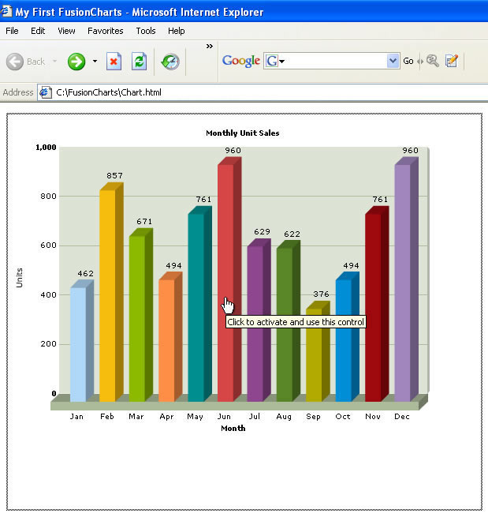

Embedding a Chart Using JavaScript |
In both our previous examples, we had used direct HTML code (shown below) to embed a chart: |
| <html> ... <OBJECT classid="clsid:D27CDB6E-AE6D-11cf-96B8-444553540000" codebase=http://download.macromedia.com/pub/shockwave/cabs/flash/swflash.cab#version=6,0,0,0" width="600" height="500" id="Column3D" > <param name="movie" value="../FusionCharts/FCF_Column3D.swf" /> <param name="FlashVars" value="&dataURL=Data.xml&chartWidth=600&chartHeight=500"> <param name="quality" value="high" /> <embed src="../FusionCharts/FCF_Column3D.swf" flashVars="&dataURL=Data.xml&chartWidth=600&chartHeight=500" quality="high" width="600" height="500" name="Column3D" type="application/x-shockwave-flash" pluginspage="http://www.macromedia.com/go/getflashplayer" /> </object> ... </html> |
As you can see above, we've used the <OBJECT> and <EMBED> tags to embed the chart in an HTML page. This method of embedding is known as direct HTML embedding. However, with the recent updates in the way Internet Explorer handles ActiveX Object (Flash is ActiveX Object), end users would first be required to click the chart to activate it. Shown below is an example: |
|  |
Until the user clicks the chart, he wouldn't be able to interact with the chart i.e., the tool tips and links won't function. This can sometimes be misleading when you've links in your chart. |
| JavaScript as Solution |
As a solution to the above "Click to activate..." problem, you'll need to use JavaScript to embed FusionCharts in your HTML pages. When you use JavaScript to write the tags for an ActiveX object, Internet Explorer doesn't display the above border and message, and the objects do not need to be activated by clicking. To make things easier, we've provided a JavaScript class named as FusionCharts, which helps you do the same in a very user-friendly way. This class can be found in Download Package > JSClass folder. The file is named as FusionCharts.js. |
| We wouldn't cover the technical details of this class. If you're interested in that, you can directly see the source of the JavaScript Class file. Instead, we'll see usage examples of this class here. |
| Let's now modify our previous Column 3D Chart (My First Chart) example to use this JavaScript class to embed the chart. |
| Making FusionCharts.js globally accessible |
Since all of your pages that contain FusionCharts would now use this JavaScript class, it's a better idea to keep this JS file in a root folder, which is globally accessible. We copy this file into our previously created FusionCharts folder, which already contains the chart SWF files. Copying here makes sure that all the charts and this JS file can be used in all pages from this central location. |
| Using the class in HTML page |
We'll now modify our HTML page to use this class to embed the chart. Create a copy of Chart.html and save it as JSChart.html in the same folder. Make the following changes to it: |
| <html> <head> <script language="JavaScript" src="../FusionCharts/FusionCharts.js"></script> </head> <body bgcolor="#ffffff"> |
Here, we first include the FusionCharts JavaScript class file using : |
| <script language="JavaScript" src="../FusionCharts/FusionCharts.js"></script> |
Create a DIV in the page body with a unique id (chartdiv in example above). |
| <div id="chartdiv" align="center">...</div> |
Instantiate a chart using the following code: |
| var myChart = new FusionCharts("../FusionCharts/FCF_Column3D.swf", "myChartId", "600", "500"); |
Here, myChart is the name of the JavaScript object that contains reference to our chart. As parameters, we pass:
Convey the XML data path to the chart using: |
| myChart.setDataURL("Data.xml"); |
Finally, render the chart by calling render()
method of the class and specifying the Id
of the DIV which we want the chart to occupy. |
| myChart.render("chartdiv"); |
|
When you now run this page in Internet Explorer, you'll see the same old Column 3D chart - but the "Click to activate..." message wouldn't show up. Also, you won't be required to click the chart to activate. |